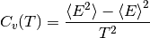

Tutorial¶
Calculating heat capacity,  ¶
¶

#!/usr/bin/env python
import multiprocessing as mp
import os
import numpy as np
import pycabs
def runCABS(temperature):
# global for simplify arguments
global name, sequence,secstr,template
# function for running CABS with different temperatures
# it will compute in directory name+_+temperature
here = os.getcwd() # since pycabs changing directories...
a = pycabs.CABS(sequence,secstr,template,name+"_"+str(temperature))
a.createLatticeReplicas(replicas=1)
a.modeling(Ltemp=temperature,Htemp=temperature, phot=10,cycles=100)
#remember to come back to `here` directory
os.chdir(here)
#init these variables _before_ running cabs
name = "fnord"
# we have some template, it has to be as list
template=["/home/user/pycabs/playground/2pcy.pdb"]
# suppose we have porter prediction of sec. str.
sss = pycabs.parsePorterOutput("/home/user/pycabs/proba/playground/porter.ss")
sequence = sss[0]
secstr = sss[1]
# now we have all data required to run CABS
temp_from = 1.5
temp_to = 3.0
temp_interval = 0.1
temperatures=np.arange(temp_from,temp_to,temp_interval) # ranges of temperature
# create thread pool with two parallel threads
pool = mp.Pool(processes=2)
pool.map(runCABS,temperatures) # run cabs threads
# HERE IS THE END OF PART WHERE WE RUN CABS in parallel fashion.
# Now you can do something with output data, we'll calculate heat capacity, Cv:
cv = np.empty(len(temperatures))
for i in range(len(temperatures)):
t = temperatures[i]
e_path = os.path.join(name+'_'+str(t),'ENERGY')
energy = np.fromfile(e_path,sep='\n') # read ENERGY data into array `energy`
avg_energy2 = np.average(energy*energy) # <E^2>
avg_energy = np.average(energy) # <E>^2
cv[i] = np.std(energy)*np.std(energy)/(t*t) # (<E^2> - <E>^2) / T^2
# now we have heat capacity in cv array
# ... and display plot
from pylab import *
xlabel(r'temperature $T$')
ylabel(r'heat capacity $C_v = (\left<E^2\right> - \left<E\right>^2)/T^2$' )
xlim(temp_from,temp_to) # xrange
plot(temperatures,cv)
show()
#remember that you have name+_+temperature directories, delete it or sth
Download script: heat_capacity.py.

Study folding pathway: 1) create standard deviation and mean energy plots for Barnase¶
#!/usr/bin/env python
# 2013, Michal Jamroz, public domain. http://biocomp.chem.uw.edu.pl
import os, random, pylab, glob, pycabs, numpy as np, multiprocessing as mp
# first of all, download pyCABS and set self.FF = "" to the FF directory with cabs files
# to compile CABS, use: g77 -O2 -ffloat-store -static -o cabs CABS.f
# to compile lattice model builder, use g77 -O2 -ffloat-store -static build_cabs61.f
sequence, secstr = pycabs.parseDSSPOutput("1bnr.dssp") # define file with secondary structure definition of define sequence and secondary structure in sequence,secstr variables respectively
name = "barnase" # name for the project. Script will create subdirectories with this name as suffix
template = ["../1bnr.pdb"] # set path to the start structure (here - native structure). If user want to start from random chain, set template=[]. Note that path is relative to simulation directory
independent_runs=5 # set number of independent simulations for each temperature
temp_from = 1.0 # define range of simulation temperatures, here is 1.0 - 2.8 with interval of 0.1
temp_to = 2.8
temp_interval = 0.1
temperatures=np.arange(temp_from,temp_to,temp_interval)
def runCABS(temperature):
global name, sequence,secstr,template,independent_runs
here = os.getcwd()
for i in range(independent_runs):
temp = "%5.3f" %(temperature)
dir_name= name+"_"+str(i)+"_T"+temp # create unique name for simulation dir
a = pycabs.CABS(sequence,secstr,template,dir_name)
a.rng_seed = random.randint(1,10000) # set random generator seed for each independent simulation
a.createLatticeReplicas(replicas=1) # create lattice model for CABS
a.modeling(Ltemp=temperature,Htemp=temperature, phot=100,cycles=100) # start modeling. phot is CABS microcycle, cycles variable is CABS macrocycle (how often write to the trajectory file)
os.chdir(here)
pool = mp.Pool() # it use all available CPUs on workstation. If user want to use only - for example two - CPUs, set pool = mp.Pool(2)
pool.map(runCABS,temperatures) # run simulations in parallel way, each simulation on each available CPU
# postprocessing (comment out two lines above to avoid starting over simulations. If you want to only plot with other labels, etc. )
cv = np.empty([independent_runs,len(temperatures)])
avgene = np.empty([independent_runs,len(temperatures)])
for j in range(independent_runs):
for i in range(len(temperatures)):
t = temperatures[i]
temp = "%5.3f" %(t)
e_path = os.path.join(name+'_'+str(j)+'_T'+temp,'ENERGY') # path constructed in the same way like dir_name in runCABS definition above
energy = np.fromfile(e_path,sep='\n') # read CABS energies for each trajectory model
cv[j][i] = np.std(energy) # calculate standard deviation (numpy std function) of energy, for each independent simulation
avgene[j][i] = np.mean(energy) # calculate mean (numpy mean function) of energy
mean_sigma = np.mean(cv,axis=0) # average over independent simulations
stddev_sigma = np.std(cv,axis=0)
mean_ene = np.mean(avgene,axis=0) # calculate of standard deviations and mean values over independent simulations
stddev_ene = np.std(avgene,axis=0)
# plotting data with pylab python module. Read matplotlib manual (http://matplotlib.org/) for explanation of below code
pylab.ylabel(r'Standard deviation of energy' )
pylab.xlabel(r'Temperature, $T$')
pylab.xlim(temp_from,temp_to)
for i in range(independent_runs):
pylab.plot(temperatures, cv[i], '.')
pylab.errorbar(temperatures,mean_sigma,yerr=stddev_sigma,fmt='o-')
pylab.savefig("stdE_barnase.png")
pylab.close()
pylab.ylabel(r'Mean energy' )
pylab.xlabel(r'Temperature, $T$')
pylab.xlim(temp_from,temp_to)
for i in range(independent_runs):
pylab.plot(temperatures, avgene[i], '.')
pylab.errorbar(temperatures,mean_ene,yerr=stddev_ene,fmt='o-')
pylab.savefig("meanE_barnase.png")
pylab.close()
# as a results user will get a lot of barnase* subdirectories, stdE_barnase.png and meanE_barnase.png files.
# EOF
Download script: folding_pathway.py. Download necessary files: 1bnr.pdb, 1bnr.dssp
Results:


Study folding pathway: 2) calculate average contact map over trajectory of sidegroups in temperature 2.1¶
#!/usr/bin/env python
# 2013, Michal Jamroz, public domain. http://biocomp.chem.uw.edu.pl
import pycabs,os,numpy as np
name = "barnase" # set project name same like in folding_pathway.py script
max_sd_temperature=2.1 # read from the plot temperature for which maximum deviation of energy is observed
independent_runs=5 # set the same value like in folding_pathway.py script
# read trajectory of sidegroups (TRASG) from all independent simulations to the trajectory variable
trajectory = []
for j in range(independent_runs):
temp = "%5.3f" %(max_sd_temperature)
e_path = os.path.join(name+'_'+str(j)+'_T'+temp,'TRASG')
trajectory += pycabs.loadSGCoordinates(e_path)
contact = pycabs.contact_map(trajectory,7.0) # calculate averaged contact map over trajectories. Cutoff set to 7.0A.
# plot contact map with pylab. Read matplotlib manual (http://matplotlib.org/) for explanation of the code below
from pylab import xlabel,ylabel,pcolor,colorbar,savefig,xlim,ylim,cm
from numpy import indices
l=len(trajectory[0])
rows, cols = indices((l,l))
xlabel("Residue index")
xlim(0, len(contact))
ylim(0, len(contact))
ylabel("Residue index")
pcolor(contact, cmap=cm.gnuplot2_r,vmax=0.8) # vmax is range of colorbar. Here is set to 0.8, which gave white color for all values greater than 0.8
cb = colorbar()
cb.set_label("Fraction of contacts")
savefig("heatmap"+str(max_sd_temperature)+".png")
# optionally, write contact map values into the text file formatted for GNUplot
fw = open("contact_map.dat","w")
for i in range(len(contact)):
for j in range(len(contact)):
fw.write("%5d %5d %7.5f\n" %(i+1,j+1,contact[i][j]))
fw.write("\n")
fw.close()
# example GNUplot script for plotting contact map of contact_map.dat file:
'''
set terminal unknown
plot 'contact_map.dat' using 1:2:3
set xrange[GPVAL_DATA_X_MIN:GPVAL_DATA_X_MAX]
set yrange[GPVAL_DATA_Y_MIN:GPVAL_DATA_Y_MAX]
set terminal postscript eps enhanced color "Helvetica" 14
set output 'contact_map.eps'
set size ratio 1
unset key
set xlabel 'Residue index'
set ylabel 'Residue index'
set cbrange[:0.8]
set palette negative
plot 'contact_map.dat' with image
'''
# write it to the file.gp and run: gnuplot file.gp to get postscript file with heat map plot
Download script: contact_map.py.
Results:

Optionally, GNUplot script for plotting contact_map.dat file generated by contact_map.py script:
set terminal unknown
plot 'contact_map.dat' using 1:2:3
set xrange[GPVAL_DATA_X_MIN:GPVAL_DATA_X_MAX]
set yrange[GPVAL_DATA_Y_MIN:GPVAL_DATA_Y_MAX]
set terminal postscript eps enhanced color "Helvetica" 14
set output 'contact_map.eps'
set size ratio 1
unset key
set xlabel 'Residue index'
set ylabel 'Residue index'
set cbrange[:0.8]
set palette negative
plot 'contact_map.dat' with image
Download script: gnuplot_script.gp.
Monitoring of CABS energy during simulation¶
#!/usr/bin/env python
from pylab import *
from sys import argv
import os
import time
import numpy as np
import pycabs
class Energy(pycabs.Calculate):
def calculate(self,data):
for i in data:
self.out.append(float(i)) # ENERGY file contains one value in a row
out = []
calc = Energy(out) # out is dynamically updated
m=pycabs.Monitor(os.path.join(argv[1],"ENERGY"),calc)
m.daemon = True
m.start()
ion()
y = zeros(1)
x = zeros(1)
line, = plot(x,y)
xlabel('CABS time step')
ylabel('CABS energy')
while 1:
time.sleep(1)
y = np.asarray(out)
x = xrange(0,len(out))
axis([0, amax(x)+1, amin(y)-5, amax(y)+5 ])
line.set_ydata(y) # update the data
line.set_xdata(x)
draw()
Download script: monitoring_energy.py.
Monitoring of end-to-end distance of chain during simulation¶
#!/usr/bin/env python
from pylab import *
from sys import argv
import time
import os
import numpy as np
import pycabs
class E2E(pycabs.Calculate):
def calculate(self,data):
models = self.processTrajectory(data)
for m in models:
first = m[0:3]
last = m[-3:]
x = first[0]-last[0]
y = first[1]-last[1]
z = first[2]-last[2]
self.out.append(x*x+y*y+z*z)
out = []
calc = E2E(out) # out is dynamically updated
m=pycabs.Monitor(os.path.join(argv[1],"TRAF"),calc)
m.daemon = True
m.start()
ion()
y = zeros(1)
x = zeros(1)
line, = plot(x,y)
xlabel('CABS time step')
ylabel('square of end to end distance')
while 1:
time.sleep(1)
y = np.asarray(out)
x = xrange(0,len(out))
axis([0, amax(x)+1, amin(y)-5, amax(y)+5 ])
line.set_ydata(y) # update the data
line.set_xdata(x)
draw()
Download script: monitoring_e2e_distance.py.
De-novo modeling of 2PCY structure¶
#!/usr/bin/env python
import pycabs
from Pycluster import *
from numpy import array
data = parsePorterOutput("/home/user/pycabs/proba/playground/porter.ss") # read PORTER (or PsiPred) secondary structure prediction
working_dir = "de_novo" # name of project
templates = [] # deNOVO
a = pycabs.CABS(data[0],data[1],templates,working_dir) # initialize CABS, create required files
# DENOVO a.generateConstraints()
a.createLatticeReplicas() # create start models from templates
a.modeling(Htemp=3.0,cycles=20,phot=100) # start modeling with default INP values and create TRAF.pdb when done
tr = a.getTraCoordinates() # load TRAF into memory and calculate RMSD all-vs-all :
#calculating RMSD 2D array for clustering
distances = zeros((len(tr),len(tr)))
for i in range(len(tr)):
for j in range(i,len(tr)):
rms = pycabs.rmsd(tr[i],tr[j])
distances[i][j] = distances[j][i] = rms
#save RMSD array as heat map
heat_map(distances,"Protein model","Protein model","RMSD")
# clustering by K-medoids method (with 5 clusters)
clusterid,error,nfound = kmedoids(distances,nclusters=5,npass=15,initialid=None)
print clusterid,error
clusterid,error,nfound = kcluster(distances,nclusters=5,npass=15)
# save cluster medoids to file
pycabs.saveMedoids(clusterid,a)
print clusterid,error
Download script: de_novo.py.

Table Of Contents
- Tutorial
- Calculating heat capacity,
- Study folding pathway: 1) create standard deviation and mean energy plots for Barnase
- Study folding pathway: 2) calculate average contact map over trajectory of sidegroups in temperature 2.1
- Monitoring of CABS energy during simulation
- Monitoring of end-to-end distance of chain during simulation
- De-novo modeling of 2PCY structure
- Calculating heat capacity,